|
4-3-3
|
Colombia | 1 | - | 0 | Ghana |
4-1-4-1
|
| HT 1-0 | ||||||
|
FIFA World CupSaturday 4 July 2026
|
||||||
- Venue
- Kansas City Stadium
- Attendance
- 69,045
- Referee
- Clément Turpin
Substitution8'
J. Córdoba
L. Suárez
Yellow card12'
J. Arias
Goal14'
J. Arias
Assist: L. Suárez
Substitution46'
J. Rodríguez
R. Ríos
Substitution73'
J. Arias
J. Quintero
Yellow card78'
R. Ríos
Substitution90'
L. Díaz
J. Campaz
Whistle45+8'
45+8'
Substitution13'
M. Senaya
A. Seidu
Yellow card49'
C. Yirenkyi
- 2
Substitution62'
I. Williams
A. Fatawu
K. Sibo
E. Owusu
Yellow card66'
A. Fatawu
Yellow card76'
A. Seidu
- 2
Substitution79'
J. Ayew
E. Nuamah
C. Yirenkyi
P. Adu
Colombia | |
|---|---|
Goalkeeper | |
| 12 | C. Vargas |
Defender | |
| 2 | D. Muñoz |
| 3 | J. Lucumí |
| 17 | J. Mojica |
| 23 | D. Sánchez |
Midfielder | |
| 11 | J. Arias 12'14'73' |
| 14 | G. Puerta |
| 16 | J. Lerma |
Forward | |
| 7 | L. Díaz 90' |
| 9 | J. Córdoba 8' |
| 10 | J. Rodríguez 46' |
Substitutes | |
| 6 | R. Ríos 46'78' |
| 20 | J. Quintero 73' |
| 21 | J. Campaz 90' |
| 25 | L. Suárez 8' |
Ghana | |
Goalkeeper | |
| 1 | L. Zigi |
Defender | |
| 14 | G. Mensah |
| 18 | J. Opoku |
| 23 | D. Luckassen |
| 26 | M. Senaya 13' |
Midfielder | |
| 3 | C. Yirenkyi 49'79' |
| 5 | T. Partey |
| 8 | K. Sibo 62' |
| 11 | A. Semenyo |
| 19 | I. Williams 62' |
Forward | |
| 9 | J. Ayew 79' |
Substitutes | |
| 2 | A. Seidu 13'76' |
| 7 | A. Fatawu 62'66' |
| 15 | E. Owusu 62' |
| 24 | E. Nuamah 79' |
| 25 | P. Adu 79' |


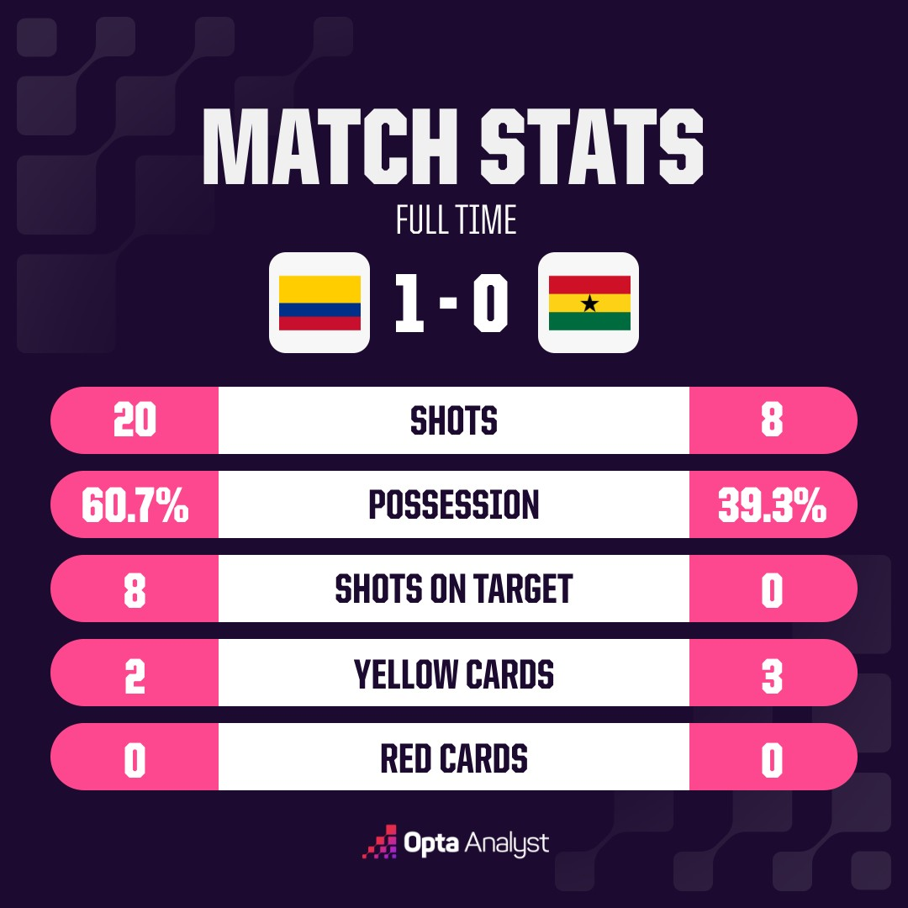
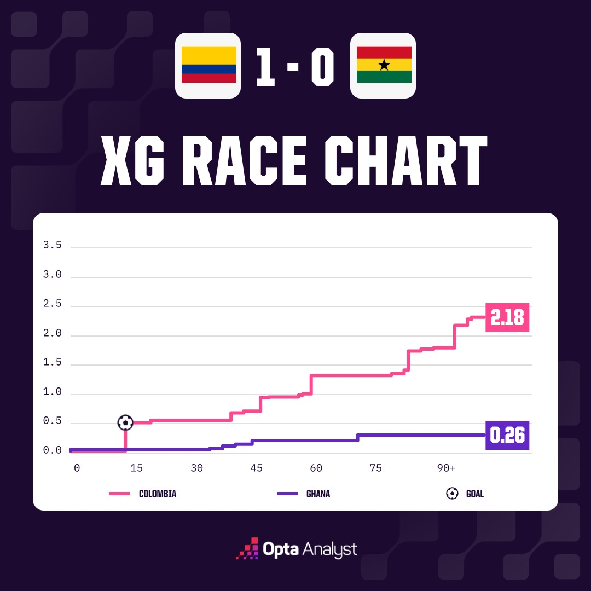
99'
Ghana have failed to win in their last 3 games in the FIFA World Cup, their last longer winless streak was from 2nd July 2010 to 24th November 2022, a run of 5 games.
99'
Colombia are undefeated in their last 7 games in the FIFA World Cup, their longest unbeaten streak in the competition (since at least 1965/1966).
99'
Colombia have kept a clean sheet in each of their last 3 games in the FIFA World Cup, a run of 355 minutes without conceding a goal.
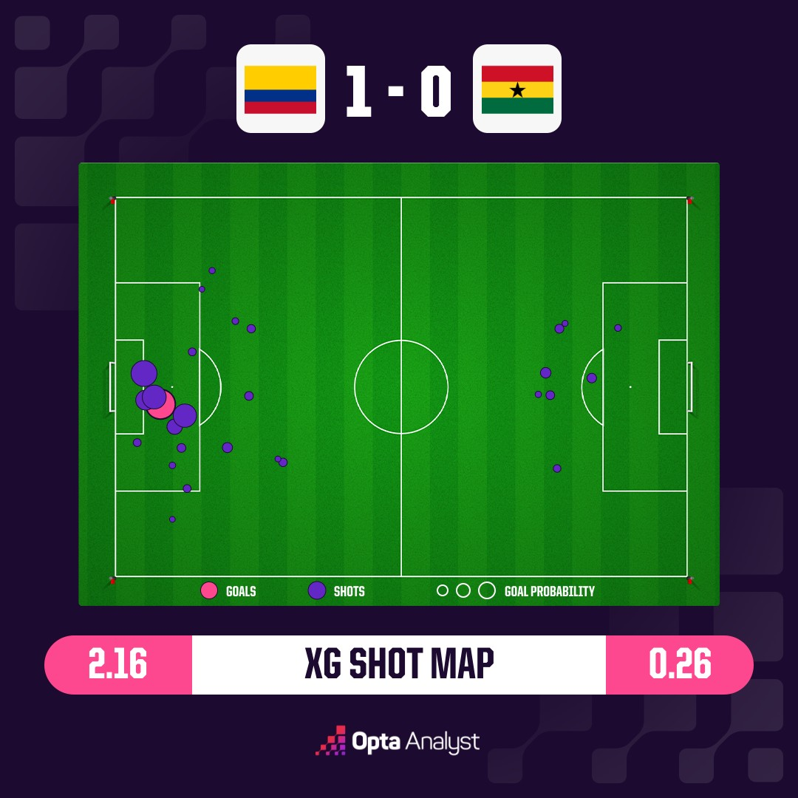
90+8'
That's it! The referee blows the whistle and we have reached full-time. The final score at Kansas City Stadium is Colombia 1-0 Ghana.
90+7'
Free-kick! A foul from Ernest Nuamah on Davinson Sánchez. It is well away from Ghana’s goal, so it is unlikely to result in a chance for Colombia.
90+6'
A rash challenge from Gustavo Puerta, who sends Abdul Fatawu tumbling, giving Ghana a free-kick. It is not in a threatening position, but it gives them a chance to get back on the ball.
90+6'
Lawrence Zigi is called into action to keep out a shot from outside the box by Jaminton Campaz. The effort from the Colombia player was on target, but Ghana shot-stopper got to it.
90+6'
Richard Ríos goes for goal with a strike from distance, but Lawrence Zigi is able to watch it all the way and make the save. A bit of a tester, there.
90+6'
Juan Quintero has created 5 chances, his highest total in a single match in the FIFA World Cup.
90+5'
BLOCK! An intervention from Elisha Owusu might have just prevented a goal, with the defending player getting in the way of an attempt from Gustavo Puerta. Solid defending there!
90+5'
BLOCK! An intervention from Alidu Seidu might have just prevented a goal, with the defending player getting in the way of an attempt from Luis Suárez. Solid defending there!
90+5'
MISS! The score remains 1-0, with Ghana relieved after Colombia’s Jaminton Campaz goes for goal but sends their attempt off target. Not one to write home about, that one.
90+2'
An opportunity for Colombia to extend their lead goes begging, as Richard Ríos is unable to convert from a good opening. Will they live to regret that miss?
90+2'
Colombia have attempted the last 6 shots in this game, Ghana last shot was taken by Thomas Partey in the 69th minute.
90+1'
Ernest Nuamah goes in on Richard Ríos and concedes a foul. The free-kick is not in a particularly dangerous area from Ghana’s viewpoint, though.
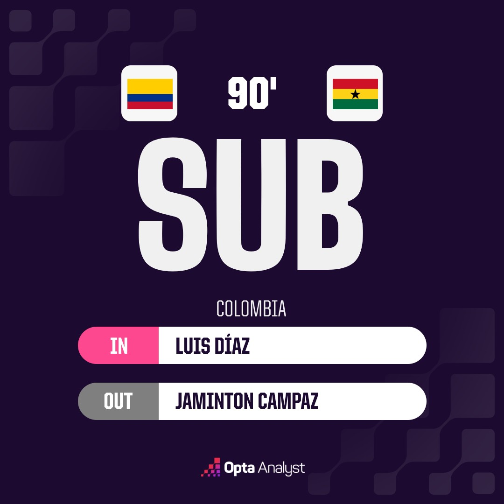
90+1'
Substitution! Jaminton Campaz replaces Luis Díaz for Colombia as the manager shuffles the pack. Can Jaminton Campaz make an impression as this match continues?
87'
A free-kick to Colombia, as Antoine Semenyo goes in and fouls Gustavo Puerta. However, Ghana will not mind giving one away in this area too much, with plenty of distance to their goal.
87'
Luis Díaz goes in on Ernest Nuamah and concedes a foul. The free-kick is not in a particularly dangerous area from Colombia’s viewpoint, though.
87'
BLOCKED! That was close. Luis Díaz got off a shot, which was heading in, but Alidu Seidu was on hand to make a vital intervention. Great block!
87'
Luis Díaz has attempted 5 shots, the first time he has attempted at least 5 shots in a match in the FIFA World Cup since facing Congo DR on 24th June 2026 (5 shots).
85'
Luis Suárez goes in on Derrick Luckassen and concedes a foul. The free-kick is not in a particularly dangerous area from Colombia’s viewpoint, though.
84'
A chance goes begging as Juan Quintero gets off a shot that does not hit the target. They might have done better with that one, but instead it is a goal-kick to Ghana.
82'
That’s offside! A switched-on defensive line from Ghana, as they step up at the right time to catch Luis Díaz offside, and the assistant referee’s flag is up.
81'
Lawrence Zigi has made 5 saves, his highest total in a single match in the FIFA World Cup.
81'
An opportunity for Colombia to extend their lead goes begging, as Davinson Sánchez is unable to convert from a good opening. Will they live to regret that miss?
81'
Ghana have not had a shot on target so far in this game.
80'
Corner now for Colombia, as they see a shot from Luis Díaz deflected out of play for a set-piece. Ghana have some defending to do, here. Could this result in a big opportunity?
79'
A foul from Prince Adu on Davinson Sánchez sees Colombia win a free-kick, but it is not in a dangerous position, so Ghana should be confident they can defend it easily enough.
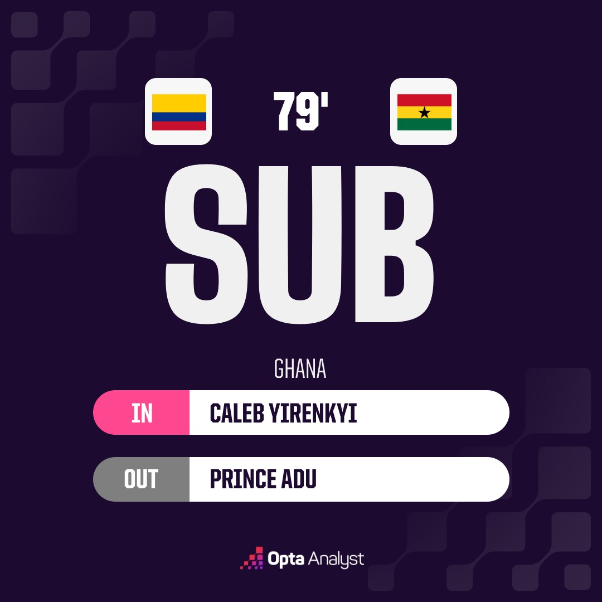
79'
Caleb Yirenkyi’s match is over as Ghana decide to make a substitution. Prince Adu enters the field in what looks like a tactical change.
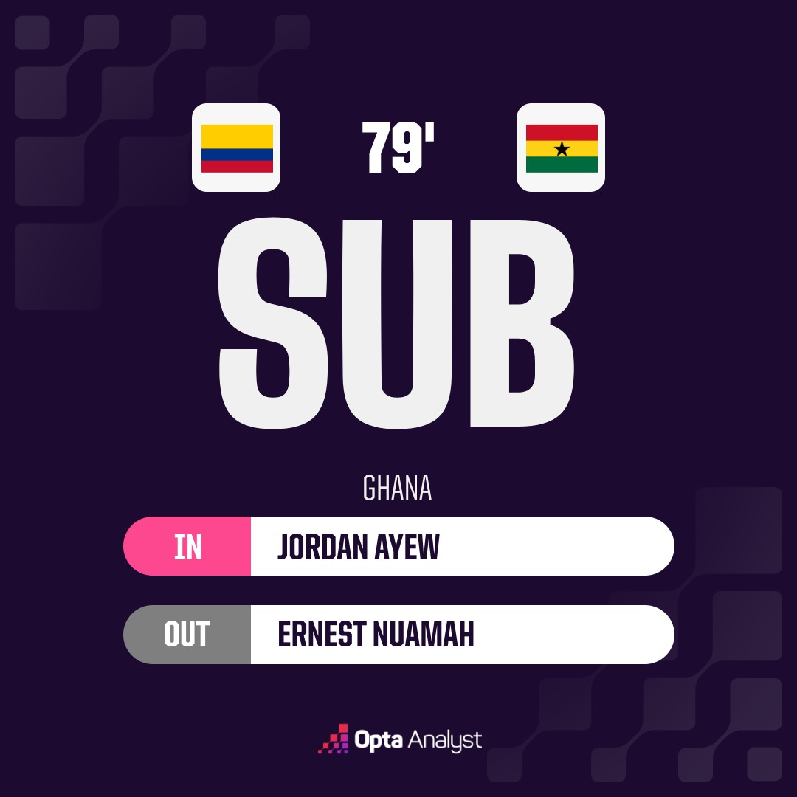
79'
Jordan Ayew’s match is over as Ghana decide to make a substitution. Ernest Nuamah enters the field in what looks like a tactical change.
78'
BOOKING! Yellow card for Richard Ríos, who is penalised for a foul. The referee waves away their remonstrations, and now they will have to be careful.
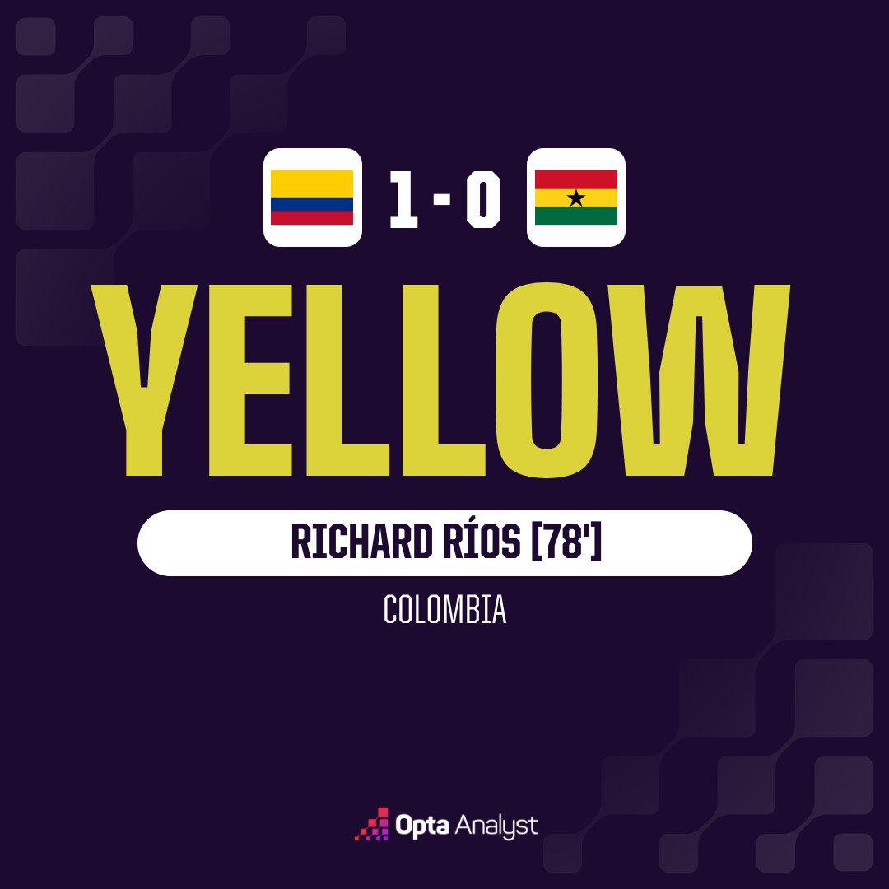
78'
A free-kick to Ghana, as Richard Ríos goes in and fouls Abdul Fatawu. However, Colombia will not mind giving one away in this area too much, with plenty of distance to their goal.
77'
No luck! Juan Quintero takes on a shot that, had they got it right, might have been set to test the goalkeeper, but instead it is sent off target and Ghana come away unscathed.
76'
The referee goes to their pocket and pulls out a yellow card, which is brandished in the direction of Alidu Seidu. Will they be able to avoid a second booking?
76'
This could be a chance for Colombia, after Alidu Seidu fouls Johan Mojica, handing them a free-kick in a threatening area. A good set-piece from here could really test the Ghana defense!
76'
Entering the final stages of this contest, let’s check on the possession stats for each team. It is Colombia who have had the more of the ball, with 62.93%, while Ghana have had to settle for 37.07%. The score is 1-0.
74'
Free-kick! A foul from Gustavo Puerta on Thomas Partey. It is well away from Colombia’s goal, so it is unlikely to result in a chance for Ghana.
73'
Colombia are making a tactical change. Jhon Arias is leaving the field and in their place comes Juan Quintero – we will soon see if this switch has the desired impact.
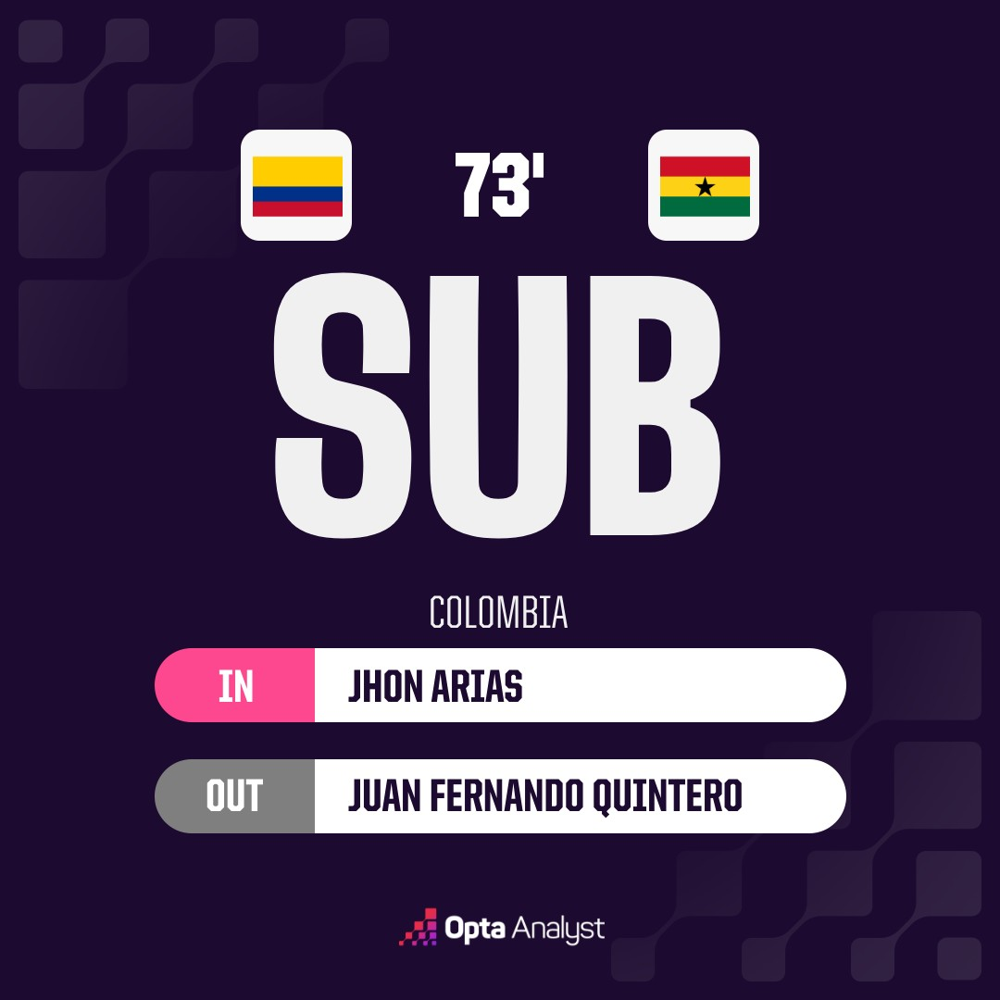
69'
A chance goes begging as Thomas Partey gets off a shot that does not hit the target. They might have done better with that one, but instead it is a goal-kick to Colombia.
69'
BLOCKED! That was close. Antoine Semenyo got off a shot, which was heading in, but Davinson Sánchez was on hand to make a vital intervention. Great block!
68'
A lull in this match, as the teams prob and probe, but without much success. It has been 10 minutes since there was an attempt from either side, though Colombia are seeing more of the ball, with 65 per cent possession to Ghana’s 35 per cent during that time.
66'
Yellow card! Abdul Fatawu will have to be careful from now on after they are cautioned.
66'
Abdul Fatawu goes in on Gustavo Puerta and concedes a foul. The free-kick is not in a particularly dangerous area from Ghana’s viewpoint, though.
66'
This match is into the last 25 minutes now, and before it goes into the final stages, let’s check on the shots. There have been 15 in total – 6 from Ghana, and 9 from Colombia. Of those attempts, 5 have hit the target – 0 from Ghana and 5 from Colombia.
62'
Substitution. Kwasi Sibo has to make way, with Elisha Owusu coming on in their place following an injury. That is going to come as a blow for Ghana. Can they overcome it?
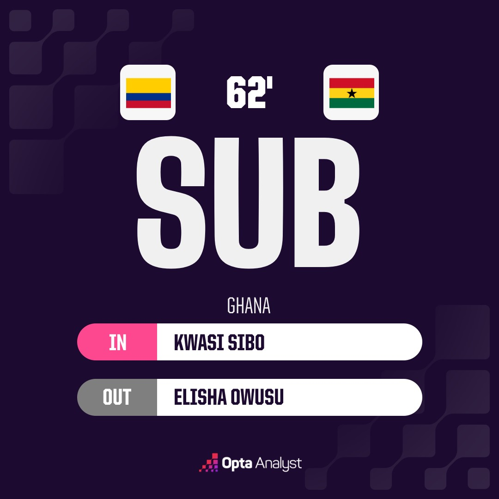
62'
Substitution! Abdul Fatawu replaces Iñaki Williams for Ghana as the manager shuffles the pack. Can Abdul Fatawu make an impression as this match continues?
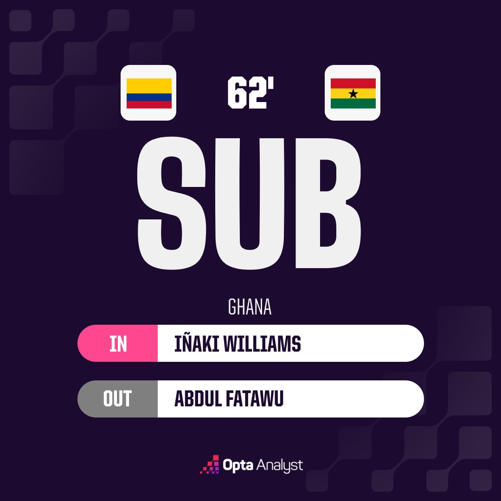
61'
Richard Ríos goes in on Antoine Semenyo and concedes a foul. The free-kick is not in a particularly dangerous area from Colombia’s viewpoint, though.
60'
A free-kick to Ghana, as Richard Ríos goes in and fouls Jordan Ayew. However, Colombia will not mind giving one away in this area too much, with plenty of distance to their goal.
59'
Free-kick! A foul from Jerome Opoku on Luis Suárez. It is well away from Ghana’s goal, so it is unlikely to result in a chance for Colombia.
58'
What a miss! That is a bad finish from Luis Díaz, who has been unable to convert from a good opportunity, seeing a big chance for Colombia to extend their lead go begging. Will Ghana make them pay for that profligacy?
56'
The Ghana defence steps up in time and there is a frustration for Luis Díaz, who thought they were through until the flag goes up to signal offside.
56'
That is a disappointing effort from Davinson Sánchez, who went for glory but got their attempt wrong, and the shot sailed off target. A frustrating moment for Colombia.
55'
Chance! A shot from inside the area from Gustavo Puerta was heading in, but Lawrence Zigi makes a fine stop to keep it out. A big save from the Ghana shot-stopper!
51'
Free-kick! A foul from Caleb Yirenkyi on Jefferson Lerma. It is well away from Ghana’s goal, so it is unlikely to result in a chance for Colombia.
50'
Excellent defensive work from Colombia; their organization and success in key duels are effectively safeguarding their lead.
49'
Yellow card! Caleb Yirenkyi will have to be careful from now on after they are cautioned.
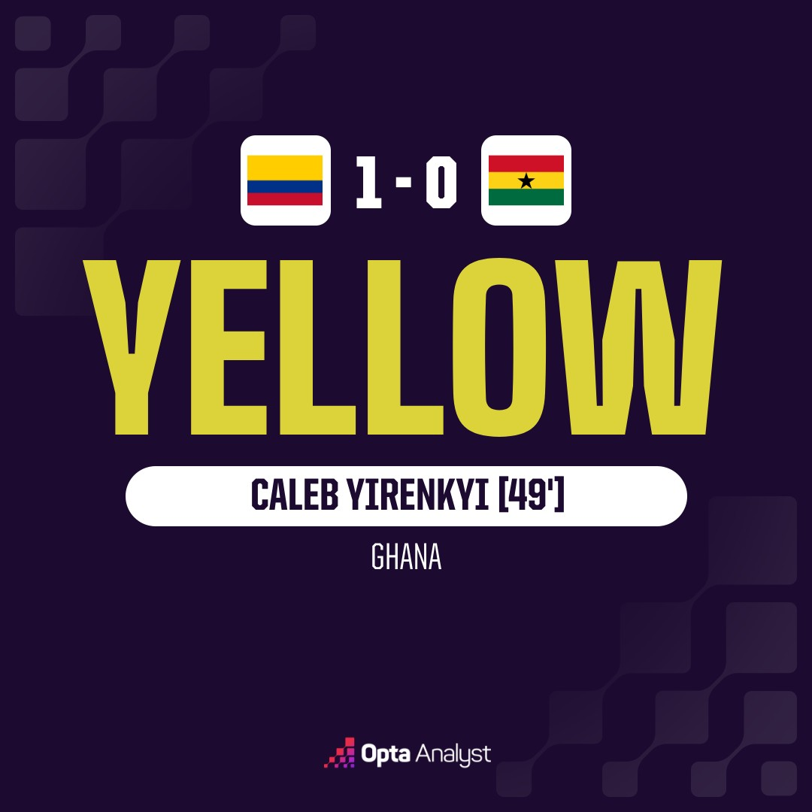
49'
A rash challenge from Caleb Yirenkyi, who sends Gustavo Puerta tumbling, giving Colombia a free-kick. It is not in a threatening position, but it gives them a chance to get back on the ball.
48'
MISS! A shot from Richard Ríos ends up being off target. They might have done a bit better with that one, but it remains Colombia 1-0 Ghana.
48'
A foul from Derrick Luckassen on Luis Suárez sees Colombia win a free-kick, but it is not in a dangerous position, so Ghana should be confident they can defend it easily enough.
46'
Foul! A free-kick now in a dangerous area for Ghana, after Jordan Ayew is fouled by Davinson Sánchez. Can Ghana make the most of this opportunity?
46'
The Colombia manager is looking to the substitutes’ bench, bringing on Richard Ríos in place of James Rodríguez. Will the change make a difference? Let’s find out!
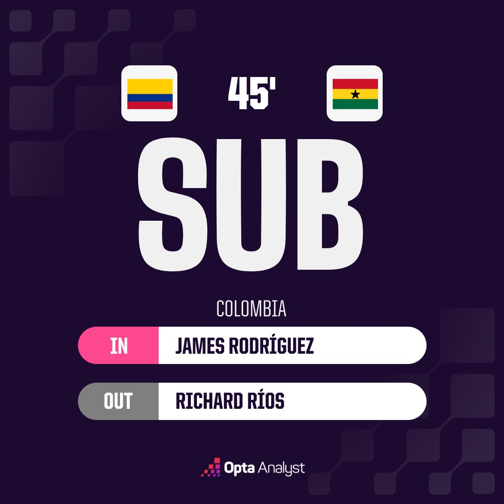
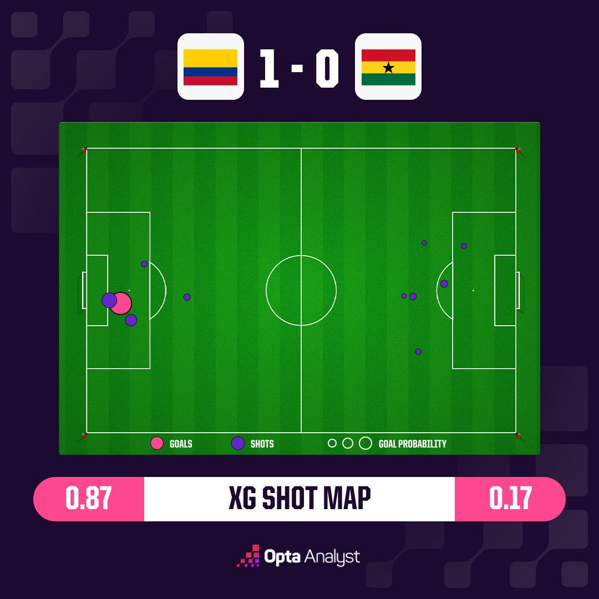
45+8'
Half-time! The referee blows the whistle and it is time for the interval. As we reach the break it is Colombia 1-0 Ghana at Kansas City Stadium.
45+7'
Free-kick! A foul from Luis Suárez on Kwasi Sibo. It is well away from Colombia’s goal, so it is unlikely to result in a chance for Ghana.
45+6'
A free-kick to Ghana, as Luis Suárez goes in and fouls Jerome Opoku. However, Colombia will not mind giving one away in this area too much, with plenty of distance to their goal.
45+1'
An opportunity for Colombia to extend their lead goes begging, as Johan Mojica is unable to convert from a good opening. Will they live to regret that miss?
45+1'
Excellent defensive work from Colombia; their organization and success in key duels are effectively safeguarding their lead.
44'
BLOCK! An intervention from Jhon Arias might have just prevented a goal, with the defending player getting in the way of an attempt from Iñaki Williams. Solid defending there!
44'
That might have been going in! A fantastic block from Daniel Muñoz, who gets in the way of a goal-bound effort from Antoine Semenyo. Would the goalkeeper have been beaten? We will never know.
42'
That is a disappointing effort from Luis Suárez, who went for glory but got their attempt wrong, and the shot sailed off target. A frustrating moment for Colombia.
41'
Ghana have not had a shot on target so far in this game.
40'
No luck! Iñaki Williams takes on a shot that, had they got it right, might have been set to test the goalkeeper, but instead it is sent off target and Colombia come away unscathed.
39'
That is a disappointing effort from Luis Díaz, who went for glory but got their attempt wrong, and the shot sailed off target. A frustrating moment for Colombia.
37'
CORNER! The pressure is building for Ghana as they win a set-piece after Antoine Semenyo's attempt is blocked by James Rodríguez and diverted out of play.
36'
Excellent defensive work from Colombia; their organization and success in key duels are effectively safeguarding their lead.
35'
There is plenty of possession for Colombia, with 69.88% compared to Ghana’s 30.12% in the last 15 minutes. However, Colombia have not been able to turn that dominance of the ball into a goal or even a shot during the period – which will be a huge frustration for their coach.
35'
A rash challenge from Luis Suárez, who sends Thomas Partey tumbling, giving Ghana a free-kick. It is not in a threatening position, but it gives them a chance to get back on the ball.
34'
BLOCKED! That was close. Iñaki Williams got off a shot, which was heading in, but Gustavo Puerta was on hand to make a vital intervention. Great block!
33'
It is a corner now to Ghana, with Colombia somewhat hanging on here as they look to hold out for a positive result. Can Ghana make something of this set-piece opportunity?
32'
It has been 30 minutes since Ghana last attempted a shot in this game.
31'
This is a team playing with assurance - Colombia string together a long sequence and look determined to take a lead into the interval.
30'
A lull in this match, as the teams prob and probe, but without much success. It has been 10 minutes since there was an attempt from either side, though Colombia are seeing more of the ball, with 77 per cent possession to Ghana’s 23 per cent during that time.
29'
Colombia have had plenty of the ball in the last 15 minutes, with 75.78% possession compared to just 24.22 % for their opponents. However, there’s not been any goal to come from that possessional dominance just yet.
20'
SAVE! A shot from outside the box by Colombia Luis Díaz was heading in, but Ghana Lawrence Zigi keeps it out with a smart stop.
20'
Daniel Muñoz goes in on Antoine Semenyo and concedes a foul. The free-kick is not in a particularly dangerous area from Colombia’s viewpoint, though.
14'
Luis Suárez has assisted his first goal in the 2026 FIFA World Cup.
14'
Jhon Arias has scored his first goal in the 2026 FIFA World Cup.
14'
GOAL! A great start for Colombia as they strike first and move into a 1-0 lead. Jhon Arias beats the goalkeeper from inside the penalty area – it looks like we are in for an exciting contest at Kansas City Stadium!
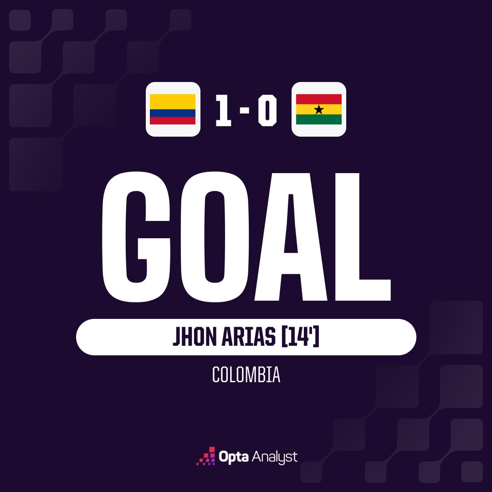
13'
An enforced substitution for Ghana, as Marvin Senaya cannot carry on after sustaining an injury. Alidu Seidu has hastily warmed up and now made their way onto the pitch in Marvin Senaya's place.
12'
Yellow card! Jhon Arias will have to be careful from now on after they are cautioned.
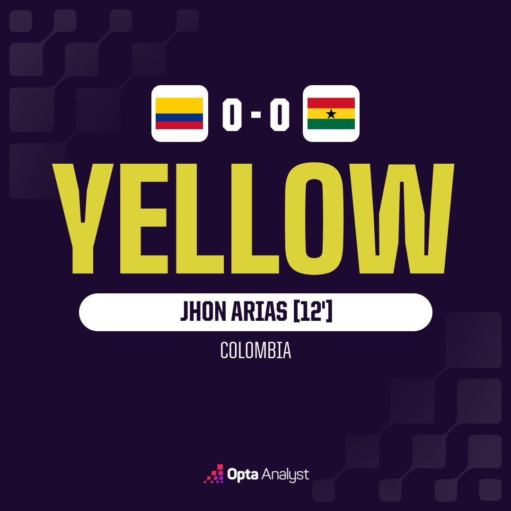
12'
A foul from Jhon Arias on Iñaki Williams sees Ghana win a free-kick, but it is not in a dangerous position, so Colombia should be confident they can defend it easily enough.
11'
Neither team has had a shot in the past 10 minutes, as this match just enters something of a down period. Colombia have seen more of the ball, with 84 per cent possession, but Ghana are keeping them away from goal. There is still a chance the match will spark into life, though.
11'
Can Ghana survive here? They will have some defending to do after the ball is turned behind for a corner kick. Will Colombia take this opportunity and grab the goal they have been pushing for?
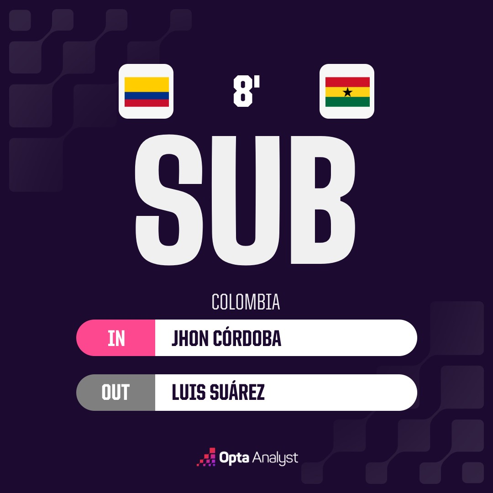
8'
An enforced substitution for Colombia, as Jhon Córdoba cannot carry on after sustaining an injury. Luis Suárez has hastily warmed up and now made their way onto the pitch in Jhon Córdoba's place.
4'
Free-kick! A foul from Gustavo Puerta on Antoine Semenyo. It is well away from Colombia’s goal, so it is unlikely to result in a chance for Ghana.
4'
Confident start by Colombia, knocking it around with purpose and keeping control in the opening phase.
1'
A chance goes begging as Thomas Partey gets off a shot that does not hit the target. They might have done better with that one, but instead it is a goal-kick to Colombia.
1'
We are under way as Colombia kick off at Kansas City Stadium. Let's hope an entertaining contest is in store.
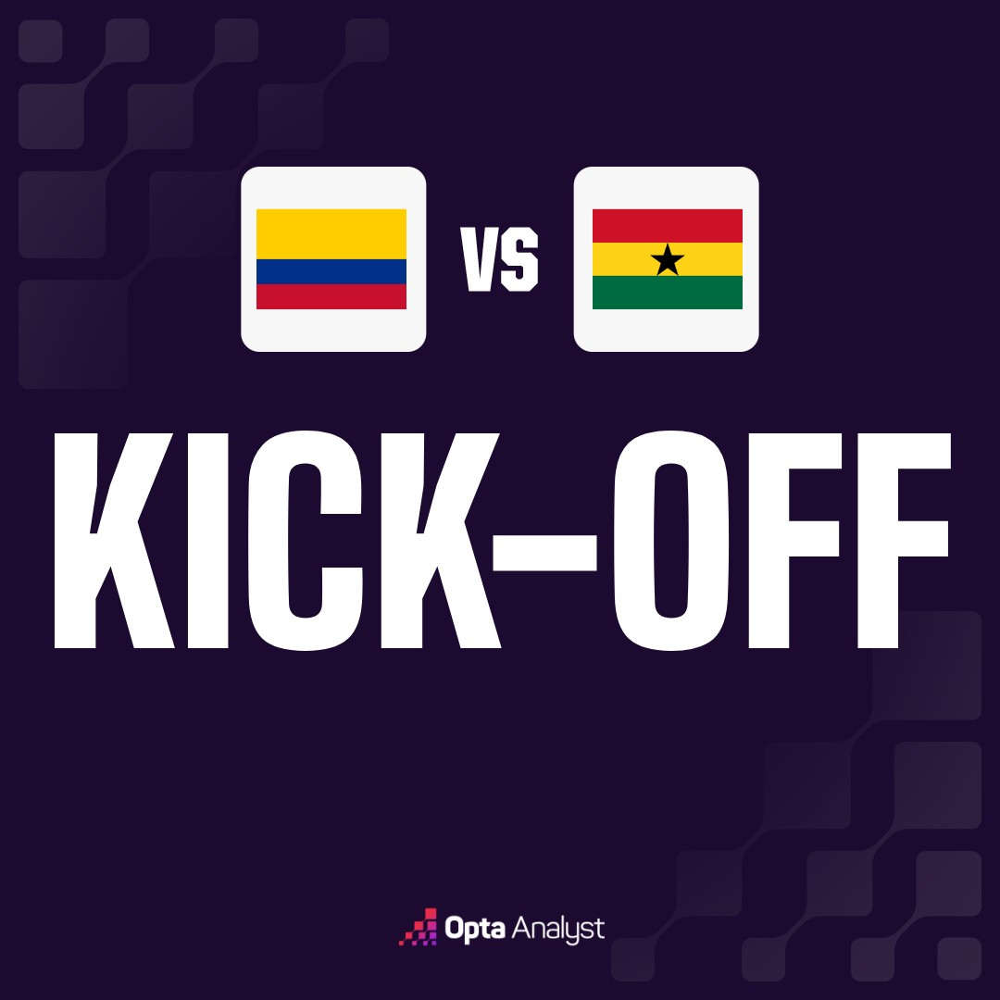
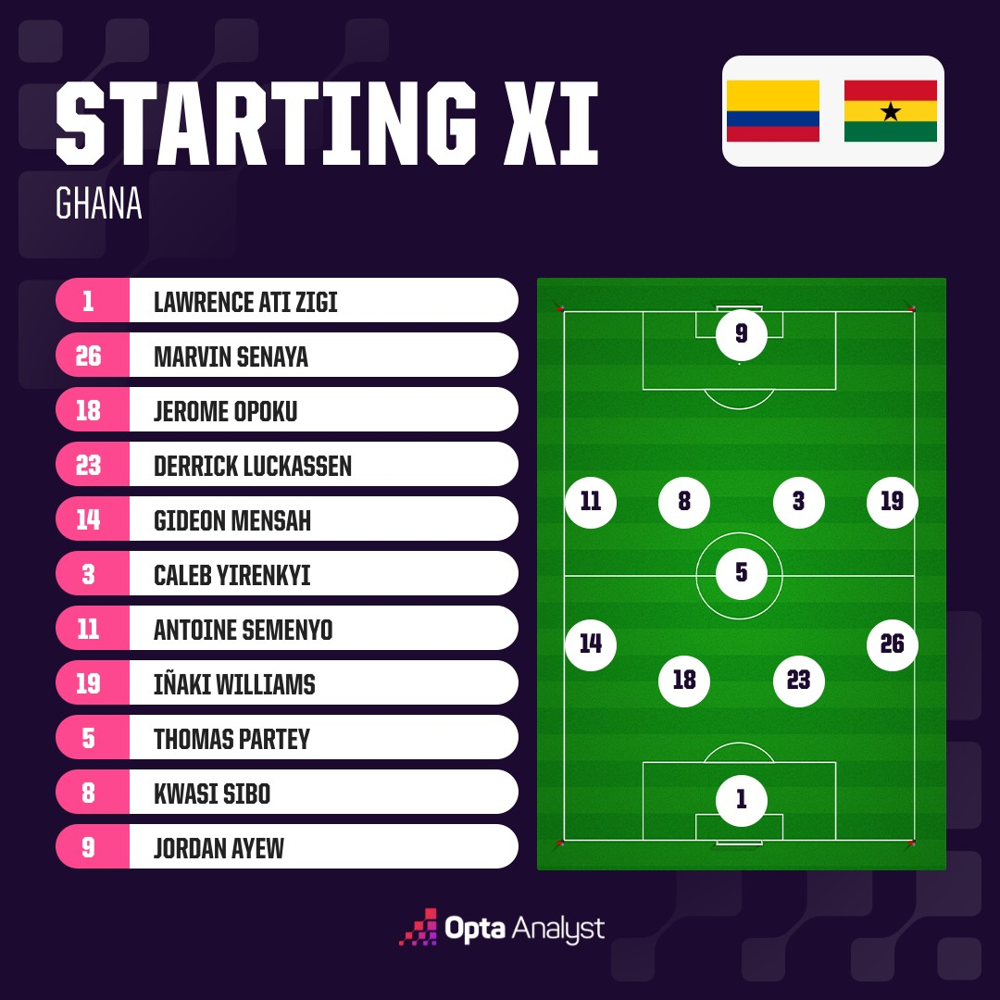
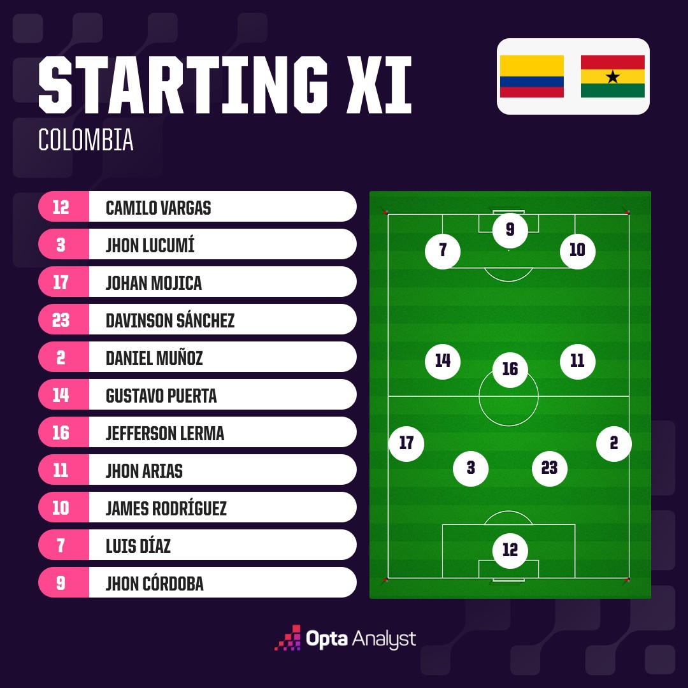
Colombia have kept a clean sheet in the last 4 home matches
Colombia have won their last 2 games when D. Muñoz has scored
Colombia play Ghana on Friday for a FIFA World Cup Round of 32 clash at Kansas City Stadium.
Colombia played out a 0-0 draw in their last group stage match against Portugal on June 27. They are undefeated in their last five games in all competitions. In seven games this year, they have four wins, one draw, and two losses.
Ghana were defeated for the first time in the competition this year in their last group stage game, falling 2-1 against Croatia at Philadelphia Stadium on June 27. Derrick Luckassen was the only player on the scoresheet in the loss. In 2026, they have won one, drawn two, and lost four.
Colombia finished first in their group on seven points, while Ghana's four points placed them third.
Colombia have been led by Daniel Muñoz in World Cup play. The defender leads the team with two goals. Ghana have been led by Luckassen and Caleb Yirenkyi, who have each netted once in this World Cup campaign.
Colombia have been impressive in defence of late in the World Cup, as they have shut out opponents over their last 210 minutes of play this season, dating to an Abbosbek Fayzullaev finish in their group stage win against Uzbekistan
In their last six matches in all competitions, Colombia have won four, drawn one and lost one. The Colombian side scored 10 and conceded five in that stretch, scoring first in four of the six contests. They had four first-half goals, while their opponents netted three times in the first 45 minutes. Ghana have won one, drawn two and lost three in their last six. The Ghanaian side scored four and conceded seven over that stretch, netting first in two of the six. All of their goals came after halftime, while their opponents netted three times before the break.
-
General
Possession 60.7% 60.66139.33939.3% Possession lost in defensive half 24 243434 Possession lost in middle third 35 354444 Duels 72 727575 Duels success rate 48.6% 48.61149.33349.3% Aerial duels 12 121212 Aerial duels won 66.7% 66.66733.33333.3% Successful dribbles 5 566 Fouls won 10 101414 Offsides 2 200 Corner awarded 3 322 -
Distribution
Passes 586 586376376 Long passes 55 554646 Long passes proportion (%) 9.4% 9.38612.23412.2% Passing accuracy 90.8% 90.78582.97983.0% Passes in opponents' half 283 283185185 Passing accuracy in opponents' half (%) 86.9% 86.92669.7369.7% Total passes in the final third 120 1208686 Passing accuracy in final third (%) 81.7% 81.66754.65154.7% Forward passes 347 347236236 Forward passes (%) 59.2% 59.21562.76662.8% Through balls 0 000 Final third entries 54 545252 Penalty area entries 22 222525 Total open play crosses 14 141313 Crosses 15 151515 Crossing accuracy 33.3% 33.33313.33313.3% -
Attack
Goals 1 100 Shots 20 2088 Shots on target 8 800 Blocked shots 4 455 Headed shots 4 400 Shots outside the box 8 866 Shots inside the box 12 1222 Shots accuracy excluding blocked shots 50.0% 5000.0% Shooting accuracy 40.0% 4000.0% Key Passes 15 1555 -
Defence
Tackles 12 121313 Tackles success rate 66.7% 66.66753.84653.8% Clearances 24 241111 Interceptions 5 555 Recoveries 41 414242 Attacking third recovery 3 311 Defensive third recovery 20 202626 Midfield third recovery 18 181515 Recoveries in attacking half (%) 7.3% 7.3172.3812.4% -
Discipline
Fouls conceded 14 141010 Yellow cards 2 233 Red cards 0 000